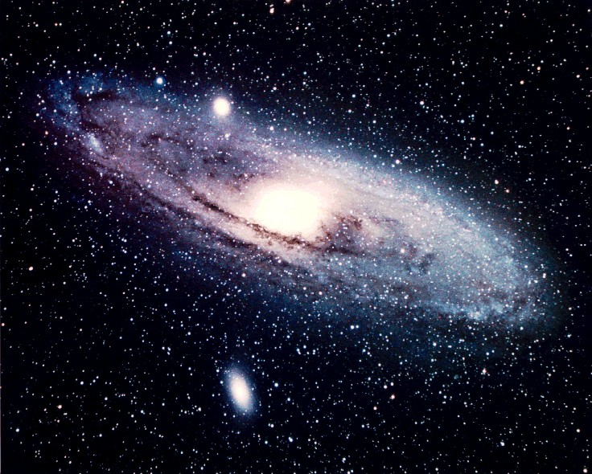

O universo é um lugar extremamente silencioso e vasto, onde sons não se propagam por causa do vácuo, tornando o espaço completamente silencioso. Apesar disso, o Sol é uma estrela barulhenta que produziria um rugido constante de cerca de 100 decibéis se o som pudesse viajar.Planetas gasosos como Júpiter, Saturno, Urano e Netuno não têm uma superfície sólida. Se você tentasse pousar neles, continuaria afundando em suas atmosferas densas.
Cabe cerca de um milhão de Terras dentro do Sol. E o Sol é considerado apenas uma estrela de tamanho médio.
Existem mais estrelas no universo observável do que grãos de areia em todas as praias da Terra juntas.
